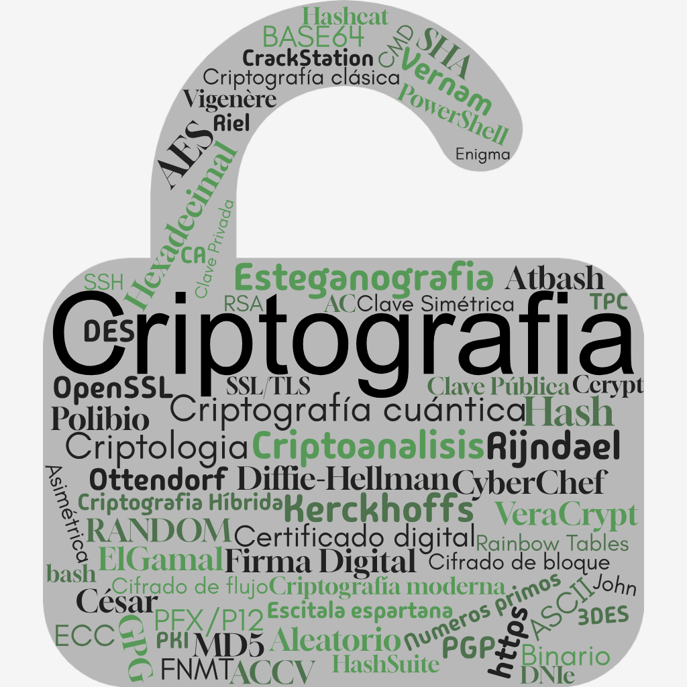
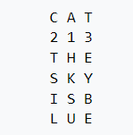
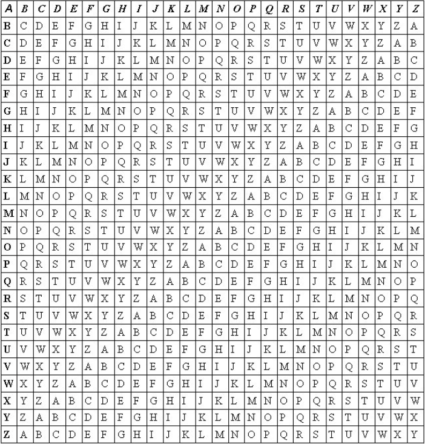

TÉCNICAS CRIPTOGRAFICAS

Practica - Conceptos sobre criptografia
Examina la lluvia de ideas del interior de la figura del candadoAnota en un folio con dos columnas:
En una colunma: Conceptos que sabes
En la otra columna : Conceptos que no sabes
PRINCIPIOS DE CRIPTOGRAFÍA
- CRIPTOGRAFIA
- Arte o ciencia de cifrar i descifrar información
- Del griego "kiptos"(ocultar) y "graphos"(escribir), literalmente "escritura oculta"
- Se utiliza para el intercanbio de mensajes de manera segura, de forma que solo puedan ser leidos por las personas a las que van dirigidos y que tengan los medios para descifrarlos CONFIDENCIALIDAD
- CRIPTOLOGIA
- Técnicas de cifrado: criptografia
- Técnicas complementarias: criptoanálisis, hashing y esteganografia
Como ciencia, engloba
Alguna aclaración respecto de "cifrar"
Cifrar NO es comprimir
Cifrar NO es codificar
Cifrar NO es resumir
Cifrar NO es esconder
TERMINOLOGÍA DE CRIPTOGRAFÍA
- La información original que debe protegerse se denomina texto en claro o texto plano.
- El cifrado es el proceso de convertir el texto plano en un texto ilegible denominado texto cifrado o criptograma.
- El descifrado es el proceso inverso que recupera el texto plano a partir del criptograma y la clave.
-
Técnicas de cifrado:
- Transposición: supone una reordenación de los elementos.
- Sustitución: cambio de significado de los elementos básicos del mensaje: las letras, los dígitos, los símbolos.
-
Algoritmos de cifrado, se clasifican en:
- De cifrado de bloque: dividen el texto original en bloques de bits de tamaño fijo y los cifra de manera independiente.
- De cifrado de flujo: el cifrado se realiza bit a bit, byte a byte o carácter a carácter.
EJEMPLOS HISTÓRICOS DE CRIPTOGRAFÍA
La Escítala de Esparta (siglo V a.C.)
Método de transposición que consistía en el uso de una vara de madera (scytale) en la que se enrollaba una tira de cuero o papiro sobre la que se escribía el mensaje. Cuando se desenrollaba el mensaje, parecía una lista sin sentido. Para descifrar el mensaje, el destinatario simplemente necesitaba una vara del mismo diámetro.
Transposición de Riel (Rail Fence)
El mensaje se escribe alternando las letras en dos líneas separadas. A continuación se concatena la secuencia de letras de la línea superior, creando el mensaje cifrado. El mensaje se recupera simplemente invirtiendo el proceso.
EJEMPLOS HISTÓRICOS DE CRIPTOGRAFÍA
Escritura inversa
Método de transposición que consiste en escribir las palabras (o frases) al revés.

Transposición Columnar Simple
El texto se escribe en filas dentro de una cuadrícula y se lee por columnas. Puede usarse sin clave o con clave (que determina el orden de lectura de las columnas):
- Sin clave:
TSILHKSUEYBE - Con clave:
HKSUTSILEYBE
Transposición por Ruta
La transposición por ruta es una técnica de cifrado que consiste en repartir el mensaje a cifrar en una figura geométrica, normalmente un paralelepípedo, y establecer una ruta que debe seguirse para leer el mensaje.
Rutas posibles:
- Espiral hacia adentro
- Espiral desde el centro
- Diagonal
- Por columnas
EJEMPLOS HISTÓRICOS DE CRIPTOGRAFÍA
Cifrado César
Sistema de sustitución que consiste en reemplazar cada letra del texto por otra que se encuentra un número de posiciones más adelante en el alfabeto. Julio César solía utilizar un desplazamiento de 3 posiciones en casi todos sus mensajes.
ROT13 (rotar 13 posiciones)
Variante del cifrado César que desplaza cada letra 13 posiciones en el alfabeto. Al ser el alfabeto de 26 letras, aplicar ROT13 dos veces devuelve el texto original.
Cifrado César – Práctica
Utiliza la página https://es.planetcalc.com/1434/ para descifrar el siguiente mensaje:
(antes de ponerse a descifrar, observa el mensaje cifrado...¿Falta algún dato? ¿Qué se puede observar en el mensaje cifrado?)
Ix zofnqmdoxcfx bp jmiq afsboqfax. cixd: CkxdFsnoxdPobbob
SCRIPT DE CIFRADO
Ejemplo de algoritmo de sustitución: comando tr
Para cifrar mediante codificación César un archivo de texto plano en Linux:
El comando tr permite realizar una sustitución carácter a carácter. Mediante tuberías (pipes) se han incorporado mayúsculas y los casos límite de los caracteres 'x', 'y', 'z'.
Práctica - Cifrado Cesar con "tr"
- Crea un fichero en texto plano.
- Cifra el fichero con el comando anterior.
- Verifica el contenido del fichero cifrado.
- Descifra el fichero y comprueba que el resultado es el mismo que el original.
ALGORITMO DE CIFRADO Y DESCIFRADO
Ejemplo de algoritmo de sustitución: algoritmo en Python
Para cifrar mediante codificación César un mensaje usando Python, debes proponer tu propio algoritmo.
Práctica
- Crea dos ficheros con los algoritmos
cifra.pyydescifra.py. - Cifra una cadena de texto.
- Descifra la cadena y verifica el resultado.
EJEMPLOS HISTÓRICOS DE CRIPTOGRAFÍA

Cifrado Vigenère
Es un cifrado basado en diferentes series de caracteres o letras del cifrado César formando una tabla, denominada tabla de Vigenère. El cifrado de Vigenère es un cifrado por sustitución simple polialfabético.
Se puede utilizar una clave para ir tomando cíclicamente las series del alfabeto. Herramienta online: https://es.planetcalc.com/2468/
Cifrado Vigenère – Práctica
Utiliza https://es.planetcalc.com/2468/ para descifrar el siguiente mensaje:
pdkjvw a yjksnxmfj, otl zx ujrwiçfjClave: iniciales de un instituto maravilloso en Algemesí.
¿Qué se puede observar en el mensaje cifrado?
EJEMPLOS HISTÓRICOS DE CRIPTOGRAFÍA
Cifrado Ottendorf (Cifrado por Libro)
También denominado Cifrado por Libro, consiste en una serie de grupos de tres números que hacen referencia a letras específicas en un libro. Este libro debe ser conocido por el descodificador, y ser además de la misma edición que el libro de la persona que escribe el mensaje codificado.
De los grupos de números:
- El primero (empezando por la izquierda) corresponde a la página del libro.
- El segundo corresponde a la línea.
- El tercero corresponde a la letra.
Ejemplo: usando el libro "La vuelta al mundo en 80 días", para escribir JULES VERNE:
EJEMPLOS HISTÓRICOS DE CRIPTOGRAFÍA
Cifrado A1Z26
Es un cifrado por sustitución directa muy simple, donde cada letra del alfabeto se reemplaza por su número en el alfabeto.
Todas las letras se ponen en minúsculas, se usa el alfabeto inglés y no se transforman los símbolos que no pertenecen al alfabeto. En la decodificación, todos los números (del 1 al 26) deben estar separados por cualquier símbolo que no sea un dígito (guion, espacio, etc.)
Variantes: A1Z27 (puede incluir la ñ) o A0Z26.
| A | B | C | D | E | F | G | H | I | J | K | L | M | N | O | P | Q | R | S | T | U | V | W | X | Y | Z |
|---|---|---|---|---|---|---|---|---|---|---|---|---|---|---|---|---|---|---|---|---|---|---|---|---|---|
| 1 | 2 | 3 | 4 | 5 | 6 | 7 | 8 | 9 | 10 | 11 | 12 | 13 | 14 | 15 | 16 | 17 | 18 | 19 | 20 | 21 | 22 | 23 | 24 | 25 | 26 |
EJEMPLOS HISTÓRICOS DE CRIPTOGRAFÍA
Cifrado Atbash
Es un método de codificación del alfabeto hebreo que consiste en utilizar la letra simétrica a la dada. También se le conoce como método espejo.
| A | B | C | D | E | F | G | H | I | J | K | L | M | N | O | P | Q | R | S | T | U | V | W | X | Y | Z |
|---|---|---|---|---|---|---|---|---|---|---|---|---|---|---|---|---|---|---|---|---|---|---|---|---|---|
| Z | Y | X | W | V | U | T | S | R | Q | P | O | N | M | L | K | J | I | H | G | F | E | D | C | B | A |
Equivalencias: A=Z | B=Y | C=X | D=W | E=V | F=U | G=T | H=S | I=R | J=Q | K=P | L=O | M=N | N=M | O=L | P=K | Q=J | R=I | S=H | T=G | U=F | V=E | W=D | X=C | Y=B | Z=A
EJEMPLOS HISTÓRICOS DE CRIPTOGRAFÍA
Cifrado de Polibio
Es un método de codificación del alfabeto griego. Puede codificar 25 símbolos mediante una matriz de 5×5. Puede ampliarse a 36 símbolos con una matriz de 6×6.
Referencias: Wikipedia – Cuadrado de Polibio
| 1 | 2 | 3 | 4 | 5 | |
|---|---|---|---|---|---|
| 1 | A | B | C | D | E |
| 2 | F | G | H | I | J |
| 3 | K | L | M | N | O |
| 4 | P | Q | R | S | T |
| 5 | U | V | W | X | Y |
Ejemplo:
ALGORITMO DE CIFRADO Y DESCIFRADO
Ejemplo de algoritmo de sustitución: algoritmo en Python
Para cifrar mediante codificación de Polibio un mensaje usando Python, debes proponer tu propio algoritmo.
Práctica
- Crea dos ficheros con los algoritmos
cifrapol.pyydescifrapol.py. - Cifra una cadena de texto.
- Descifra la cadena y verifica el resultado.
EJEMPLOS HISTÓRICOS DE CRIPTOGRAFÍA
Cifrado Vernam
Es un cifrado de flujo en el que el texto en claro se combina, mediante la operación XOR, con un flujo de datos aleatorio o pseudoaleatorio de la misma longitud (clave), para generar un texto cifrado.
El uso de datos pseudoaleatorios generados por un generador de números pseudoaleatorios criptográficamente seguro es una manera común y efectiva de construir un cifrado de flujo.
El RC4 es un ejemplo de cifrado de Vernam que se utiliza con frecuencia en Internet.
| T | E | X | T | O | → decimal | → binario |
|---|---|---|---|---|---|---|
| 84 | 69 | 88 | 84 | 79 | 1010100 | 1000101 | 1011000 | 1010100 | 1001111 | |
| C | L | A | V | E | → decimal | → binario |
| 67 | 76 | 65 | 86 | 69 | 1000011 | 1001100 | 1000001 | 1010110 | 1000101 | |
| XOR | 23 | 9 | 25 | 2 | 10 | 10111 | ||||
| hex | 17 | 9 | 19 | 2 | A | |||||
Cifrado Vernam – Práctica con CyberChef
Utiliza https://gchq.github.io/CyberChef/ para descifrar:
23 0d 0d 44 05 0b 02 4a 41 27 10 10 04 42 1b 0d 07 10 02 10 41 07 10 44 0c 07 10 44 02 0d 0e 14 0d 0b 00 05 15 4cClave:
abcd
Cifrado Vernam – Pasos en CyberChef
Dado que XOR actúa a nivel de bit, primero hay que convertir los datos a bits. La clave abcd en hexadecimal es 61 62 63 64.
Pasos en CyberChef:
- Añadir operación From Hex (delimitador: Auto).
- Añadir operación XOR con clave
61 62 63 64en formato HEX, esquema Standard.
EJEMPLOS HISTÓRICOS DE CRIPTOGRAFÍA
Cifrado Enigma
Era el nombre de una máquina de rotores que permitía usarla tanto para cifrar como para descifrar mensajes. Su facilidad de manejo y supuesta inviolabilidad fueron las principales razones para su amplio uso.
La máquina Enigma fue un dispositivo electromecánico que usaba una combinación de partes mecánicas y eléctricas. El mecanismo estaba constituido fundamentalmente por un teclado similar al de las máquinas de escribir (cuyas teclas eran interruptores eléctricos), un engranaje mecánico y un panel de luces con las letras del alfabeto.
Referencia: https://summersidemakerspace.ca/projects/enigma-machine/
Las claves que se suministran: Modelo, Reflector, Rotores, Anillos, Clavijero.
Cifrado Enigma – Funcionamiento
La máquina Enigma funciona mediante tres o más rotores que sustituyen cada letra pulsada por otra diferente, y cada vez que se pulsa una tecla el rotor avanza una posición, cambiando el cifrado. La señal eléctrica pasa por los rotores de izquierda a derecha, rebota en el reflector y vuelve de derecha a izquierda, encendiendo una luz que indica la letra cifrada.
El proceso es simétrico: si se cifra una letra con una configuración determinada, al introducir la letra cifrada con la misma configuración inicial se obtiene la original.
Cifrado Enigma – Práctica con CyberChef
Utiliza https://gchq.github.io/CyberChef/ para descifrar:
VBCUH QMCDY HSCJX YJFON QILXB WOWYR EClave / Configuración de rotores:
- Rotor izquierdo: S
- Rotor central: V
- Rotor derecho: F
- Modelo: 3-rotor
Cifrado por codificación
No obstante, es importante conocer el formato de una información cifrada para analizar por dónde empezar a decodificar/descifrar.
Formatos habituales:
- ASCII
- HEXADECIMAL
- BASE64
- BINARIO
HERRAMIENTAS DE CIFRADO ONLINE
- https://es.planetcalc.com/1434/ – Cifrado César
- https://www.convertstring.com/ – Base64
- https://www.rapidtables.com/ – Hex a ASCII
- https://gchq.github.io/CyberChef/ – CyberChef
- https://cryptii.com/ – Cryptii
- https://www.dcode.fr/ – dCode
TIPOS DE ALGORITMOS DE CIFRADO
Principio de Kerckhoffs (1883 – La Cryptographie Militaire)
En seguridad y criptografía, principio según el cual la seguridad de un sistema cifrado debe depender exclusivamente de la clave y no de la seguridad de cualquier otra parte del sistema.
Debe suponerse, así, que el sistema puede caer en manos del "enemigo" y que puede analizarlo tanto como quiera, pero que la falta de la clave le impedirá entender el código cifrado.
Por lo tanto, los algoritmos son públicos y pueden estudiarse y valorarse para elegir el que mejor se adapte a nuestras necesidades.
CRIPTOGRAFÍA MODERNA
A partir de este punto, el contenido del módulo SAD se centra en las técnicas de criptografía moderna, que incluyen:
- Criptografía simétrica moderna (AES, DES, 3DES…)
- Criptografía asimétrica (RSA, ECC, Diffie-Hellman…)
- Funciones hash (MD5, SHA…)
- Firma digital y certificados digitales
TIPOS DE ALGORITMOS DE CIFRADO
Existen dos grandes tipos de algoritmos de cifrado:
- Simétricos o de clave simétrica: usan una única clave tanto en el proceso de cifrado como en el descifrado.
- Asimétricos o de clave asimétrica o pública: usan una clave para cifrar mensajes y una clave diferente para descifrarlos. Forman el núcleo de las técnicas de cifrado modernas (certificados digitales, firma digital, DNIe).
CRIPTOGRAFÍA SIMÉTRICA
- Se usa una misma clave para cifrar y descifrar mensajes.
- Las dos partes que se comunican deben acordar previamente la clave a usar.
- Un buen sistema de cifrado pone toda la seguridad en la clave y ninguna en el algoritmo:
- La clave debe ser muy difícil de adivinar.
- Importante: longitud de la clave y conjunto de caracteres que emplee.
CRIPTOGRAFÍA SIMÉTRICA — Ejemplos de algoritmos
- DES (Data Encryption Standard, IBM 1975), elegido estándar FIPS: usa una clave de 56 bits → 256 claves posibles (72.057.594.037.927.936). Utiliza cifrado de Feistel. Sucesor del algoritmo Lucifer.
- 3DES (IBM 1998): usa claves de 128 bits, lo que significa 2128 claves posibles (340.282.366.920.938.463.463.374.607.431.768.211.456). Usado en tarjetas de crédito.
En 1997, el Instituto Nacional de Normas y Tecnología (NIST) convocó un concurso para elegir un nuevo algoritmo de cifrado capaz de proteger información sensible durante el siglo XXI. Este concurso se denominó Advanced Encryption Standard (AES). Los resultados fueron:
- RIJNDAEL: 86 votos
- SERPENT: 59 votos
- TWOFISH: 31 votos
- RC6: 23 votos
- MARS: 13 votos
CRIPTOGRAFÍA SIMÉTRICA — Algoritmos detallados
- DES (1976): bloques de 64 bits, clave de 64 bits (56 efectivos). Usa la función F de Feistel.
- IDEA (International Data Encryption Algorithm, 1991): bloques de 64 bits, clave de 128 bits.
- Blowfish (1993): bloques de 64 bits, claves de 32 a 448 bits (16 rondas de Feistel).
- 3DES (IBM 1998): triple-DES, bloques de 64 bits, clave de 168 bits (112 efectivos). Usa Feistel.
- AES / Rijndael (2001): estándar de cifrado del gobierno de EE.UU. Bloque fijo de 128 bits, clave de 128, 192 o 256 bits.
- RC6 (Rivest Cipher 6): bloque de 128 bits, claves de 128, 192 y 256 bits.
- Serpent: bloque de 128 bits, claves de 128, 192 y 256 bits.
- MARS (IBM): bloques de 128 bits, claves de longitud variable de 128 a 448 bits.
- Kuznyechik: cifrado por bloques simétrico con bloque de 128 bits y clave de 256 bits. Definido en el Estándar Nacional de la Federación Rusa.
- Camellia (Japón): bloque de 128 bits, claves de 128, 192 y 256 bits.
CRIPTOGRAFÍA SIMÉTRICA — AES en la práctica
AES (Advanced Encryption Standard) o Rijndael: estándar de cifrado del gobierno de EE.UU. Usa un tamaño de bloque fijo de 128 bits y clave de 128, 192 o 256 bits.
Mensaje:
2259206c3308406be9d0ae30d610bf32bc0c2a417a346bf3c3c3be620575db96Clave:
1234567890abcdefIV:
abcdef0987654321Contesta:
- ¿De qué tamaño es la clave?
- Fíjate en el mensaje y en la clave. ¿En qué codificación está cada uno?
CRIPTOGRAFÍA SIMÉTRICA — Problemas principales
Los principales problemas de los sistemas de cifrado simétrico son:
El intercambio de claves
- ¿Qué canal de comunicación seguro han usado para transmitirse las claves?
- Es más fácil para el atacante intentar interceptar una clave que probar todas las combinaciones posibles.
El número de claves necesarias
- Para n personas que necesitan comunicarse entre sí, se necesitan n(n-1)/2 claves diferentes.
- 90 personas → 4.005 claves | 300 personas → 44.850 claves | 6.000 personas → 17.997.000 claves.
- Solo funciona bien con un grupo reducido de personas.
Fortaleza de la clave
- Principio de Kerckhoffs.
- La responsabilidad de la fortaleza de la clave recae sobre el usuario.
CRIPTOGRAFÍA SIMÉTRICA — ccrypt en Linux
Cifrado de datos con ccrypt
- Herramienta para cifrar y ocultar en el ordenador datos que el usuario considere reservados o confidenciales.
- Utiliza: Rijndael/256 (el mismo que AES).
- Sobreescribe los sectores originales (lo intenta).
sudo apt-get install ccrypt ccrypt archivo # Cifra el archivo ccrypt -d archivo # Descifra el archivo ccrypt -R carpeta # Cifra la carpeta ccrypt -dR carpeta # Descifra la carpeta
Práctica
Cifrar un archivo y una carpeta con ccrypt usando una clave simétrica. Observar los resultados.
CRIPTOGRAFÍA SIMÉTRICA — Sistema EFS de Windows
Cifrado de datos con EFS
- Herramienta para proteger la salida de datos del sistema.
- Utiliza: AES + SHA + ECC.
Práctica
Cifrar una carpeta con Windows EFS. Copiarla al ordenador de un compañero y observar si se puede acceder.
¿Dónde está la clave?
CRIPTOGRAFÍA SIMÉTRICA — VeraCrypt
Cifrado de datos y particiones con VeraCrypt
- Herramienta para cifrar y ocultar en el ordenador datos que el usuario considere reservados o confidenciales.
- Ofrece la posibilidad de crear discos virtuales o aprovechar una partición ya existente para guardar archivos cifrados.
- Permite elegir entre varios algoritmos de cifrado: AES, Camellia, Kuznyechik, Serpent, Twofish.
- Descarga: https://www.veracrypt.fr/en/Downloads.html
Prácticas
- Crear un disco cifrado en Windows.
- Proteger un pendrive con contraseña.
CRIPTOGRAFÍA SIMÉTRICA — VeraCrypt en Linux
Práctica — Montar un volumen cifrado desde la consola de Linux
-
Instalar VeraCrypt.
Desde la página de descargas, baja la versión adecuada:
https://www.veracrypt.fr/en/Downloads.html
Ábrela con el instalador de Ubuntu. - Cifrar un archivo como un volumen virtual.
CRIPTOGRAFÍA SIMÉTRICA — CryFS en Linux
Práctica — Montar una carpeta para cifrar datos en uso
En Linux / Kali:
-
Instalar la utilidad CryFS (visita la página oficial: www.cryfs.org).
Preparar dos carpetas:basedirymountdir.
Montar el cifrado:cryfs basedir mountdir
Guardar y modificar datos dentro demountdir(¡nunca enbasedir!).
Observar (solo observar)basedir. -
Desmontar el cifrado:
cryfs-unmount mountdir
(o reiniciar, o cerrar la sesión de usuario).
CIFRADO DE INFORMACIÓN
Cifrado de información en equipo local
- Cifrado de un archivo
- Cifrado de una carpeta
- Cifrado de un disco (interno o externo)
- Cifrado del Sistema Operativo completo
- Cifrado de Bases de datos
Cifrado de información en la nube
- Cifrado de información en reposo
- Cifrado de información en tránsito
- Cifrado de información en uso
CIFRADO DE PARTICIÓN DEL SISTEMA OPERATIVO
Windows
- BitLocker (disponible en Windows 10 Professional y Enterprise).
https://rootear.com/windows/activa-bitlocker-w10
GNU/Linux
- Cifrar al instalar el SO:
https://www.softzone.es/linux/tutoriales/cifrar-disco-duro-linux/ - Cifrar la carpeta de usuario:
http://somebooks.es/cifrar-la-carpeta-de-usuario-en-ubuntu-22-04-lts/
INFORMACIÓN SENSIBLE
Antes de desechar un disco duro, bórralo o destrúyelo.
Para un entorno con información sensible, utiliza herramientas especializadas.
Herramientas de borrado seguro en Linux:
$ shred -zvu -n 5 passwords.list $ wipe -rfi private/* $ srm -vz private/* $ sudo sdmem -f -v
INFORMACIÓN SENSIBLE
Antes de desechar un disco duro, bórralo o destrúyelo.
Para un entorno con información sensible, utiliza herramientas especializadas.
Herramientas de recuperación (Windows)
- EaseUS Data Recovery Wizard
- Recoverit
- Recuva
Herramientas de recuperación (Linux)
- Scalpel: herramienta para recuperar archivos borrados en Linux.
- Herramienta genérica para recuperar archivos borrados en Linux.
FUNCIONES HASH
Funciones resumen o funciones hash (también funciones digest)
- Los sistemas asimétricos se apoyan en funciones resumen o funciones hash de un solo sentido. Su cálculo directo es viable, pero la función inversa resulta casi imposible (computacionalmente intratable).
- El resumen siempre tiene una longitud fija y pequeña (típicamente 128 o 256 bits).
- Pequeños cambios en el documento producen grandes cambios en el hash.
- Algoritmos empleados como funciones resumen o funciones hash: ejemplos: MD5 y SHA.
Usos
- Analizar la integridad de un archivo (iso, programa...) y verificar su autenticidad.
- Almacenamiento de contraseñas de usuario, archivo
/etc/shadowde GNU/Linux. - Firma digital de archivos, correo electrónico, etc.
- Detectar malware.
- Protección de contenido protegido (copyright).
- Tecnologías Blockchain y SmartContracts.
Ejemplo de uso de funciones resumen
Analizar la integridad de un archivo descargado mediante la comprobación de su valor resumen calculado.
En muchas ocasiones, las webs de los fabricantes originales muestran junto a su archivo de instalación el valor resumen calculado, con el que podremos verificar, tras descargar el archivo de instalación, su integridad o que no ha sido modificado o es una falsificación.
Ejemplo práctico Windows
- Descarga una ISO de la página
http://ophcrack.sourceforge.net/download.php - Descarga la utilidad md5 de la página
http://www.fourmilab.ch/md5/ - Comprueba si se ha descargado correctamente (la ISO).
Ejemplo GNU/Linux / KALI
$ md5sum archivo.txt > archivo.md5 $ md5sum -c archivo.md5
FUNCIONES CONCRETAS
MD5
La función hash MD5 produce un valor hash de 128 bits (16 bytes o 32 nibbles). Fue diseñado para su uso en criptografía, pero se descubrieron vulnerabilidades con el paso del tiempo, por lo que ya no se recomienda para ese propósito. Sin embargo, todavía se utiliza para particionar bases de datos y calcular sumas de comprobación para validar transferencias de archivos.
SHA1
SHA1 genera un hash de 160 bits (20 bytes o 40 nibbles). En formato hexadecimal, es un número entero de 40 dígitos. Al igual que MD5, fue diseñado para aplicaciones de criptología, pero pronto se descubrió que también tenía vulnerabilidades. Hoy en día, ya no se considera menos resistente al ataque que MD5.
SHA2
La segunda versión de SHA, llamada SHA-2, tiene muchas variantes. Probablemente la más utilizada es SHA-256, que el NIST recomienda usar en lugar de MD5 o SHA-1. El algoritmo SHA-256 devuelve un valor hash de 256 bits o 64 dígitos hexadecimales.
SHA3
Este método hash se desarrolló a finales de 2015 y todavía no ha tenido un uso generalizado.
Práctica - Calcula hash
Utiliza las siguientes funciones de Linux para calcular resúmenes de archivos y observa los resultados. Utiliza la opción -c para comprobar la integridad del archivo original:
md5sum sha1sum sha224sum sha256sum sha384sum sha512sum
SHA3 con OpenSSL
SHA3 no tiene soporte en Linux como orden directa, pero podemos utilizar la suite OpenSSL:
$ openssl help Message Digest commands (see the 'dgst' command for more details) blake2b512 blake2s256 gost md4 md5 mdc2 rmd160 sha1 sha224 sha256 sha3-224 sha3-256 sha3-384 sha3-512 sha384 sha512 sha512-224 sha512-256 shake128 shake256 sm3 $ openssl dgst -sha3-256 texto.plano
Ejemplo de salida:
SHA3-256(archivo)= ad015c3dff3cb222649c24e3c68acc7e46d67a81df70368ccc1305dff8b8ae8a
¿Cómo se rompe un Hash?
- Fuerza bruta (Herramientas: John the Ripper, HashCat, Hash Suite —
https://hashsuite.openwall.net/). - Fuerza bruta con diccionarios.
- Rainbow Tables (
https://crackstation.net/o similares). - Atacando el algoritmo específico.
Otras funciones Hash
- WHIRLPOOL
- Streebog
- CRC
- Tiger
- Snefru
- RipeMD
- MD2, MD4
- Haval
- Adler
- Gost
Herramienta online: https://hash.online-convert.com/
Funciones Hash Lentas (especiales para contraseñas)
- Argon2
- scrypt
- bcrypt
- PBKDF2
Práctica - Truecrypt
Busca información sobre la historia de TrueCrypt:
- ¿Quién fue su creador?
- ¿Por qué desapareció?
- ¿Quién ha heredado sus funcionalidades?
Práctica — Calcular HASHes en Windows
Instala y utiliza el programa para calcular hashes: https://www.quickhash-gui.org/downloads/
Visita la página oficial y contesta:
- ¿Para qué Sistemas Operativos está disponible?
- ¿Qué algoritmos de hash puede calcular?
- ¿Qué otras herramientas ofrece la web?
Práctica — Calcular HASHes en Windows con PowerShell
Busca información sobre cómo visualizar un hash en PowerShell.
Calcula el hash de un archivo con los tipos de hash: md5, sha1, sha256, sha512, sha384
Calcula el hash de una cadena "Hola Mundo"
¡Visualiza TODOS los hashes completos!
Contesta: Si no se especifica un tipo de hash, ¿qué hash calcula por defecto?
Esteganografía
La esteganografía (del griego steganos, "cubierto" u "oculto", y graphos, "escritura") estudia y aplica técnicas que permiten ocultar mensajes u objetos dentro de otros, llamados portadores, para ser enviados de manera que el hecho no sea percibido. Es decir, procura ocultar mensajes dentro de otros objetos y así establecer un canal encubierto de comunicación, de modo que el propio acto de la comunicación pase inadvertido para los observadores que tienen acceso a dicho canal.
a ocultar
Tanto con esteganografía como con criptografía se intenta ocultar un mensaje para ser enviado, pero son fundamentalmente diferentes: la criptografía solo cifra los mensajes, manteniéndolos visibles pero irreconocibles (aparecen como una secuencia de caracteres ilegibles), y para ver su contenido original es necesario conocer una clave. En la esteganografía, el archivo u objeto que contiene el mensaje oculto se verá idéntico al original, y para conocer su mensaje será necesario conocer la clave y el algoritmo (software) con el que se ocultó.
Aunque habitualmente solemos considerar la esteganografía como una técnica para ocultar información dentro de imágenes, la verdad es que existen muchos otros tipos:
Esteganografía pura
No existe estegano-clave, y por tanto se presupone que el observador es incapaz de reconocer información oculta mediante esteganografía en un mensaje normal. Se aplica entonces seguridad basada en la oscuridad. El mejor ejemplo es un mini reto de hacking donde la imagen tiene oculta otra imagen que cualquiera puede obtener abriendo el camuflaje (la primera imagen) con un editor hexadecimal. Hay una imagen "concatenada" a otra imagen. Descubre cómo extraerla. Esa imagen muestra una clave. (fichero adjunto)
Podemos situar los datos ocultos (disfrazados) en:
- Como fichero "adjunto" o "pegado", concatenando información.
- En los METADATOS de la imagen (visor de PDF, exiftool, ...).
- En la propia imagen (a simple vista, con LSB, con canal Alpha).
- Oculto en el Thumbnail de un fichero, imagen, vídeo...
Esteganografía de clave secreta
En este caso, la estegano-función depende de una clave que deben conocer tanto el emisor como el receptor. Un ejemplo sencillo sería un texto oculto bajo otro texto generado aleatoriamente a partir de un capítulo de un libro que ambos (emisor y receptor) conozcan, y una contraseña que dictará cómo descifrar el mensaje camuflado.
La esteganografía tiene por tanto una terna en cuyo equilibrio radica la función para la
que se ha desarrollado. Habitualmente, las técnicas de esteganografía que permiten
ocultar mayor información (cantidad) son menos robustas y pasan menos
desapercibidas (invisibilidad). Por el contrario, a mayor robustez, normalmente menor
cantidad de información oculta.
Técnicas más utilizadas en esteganografía
- En documentos.
- En imágenes.
- En audio.
- En vídeo.
- En archivos de cualquier tipo.
- Otras. Una nueva técnica esteganográfica implica inyectar retardos (delays) imperceptibles en los paquetes enviados por la red desde el teclado. Los retardos en la pulsación de comandos en ciertos usos (telnet o software de escritorio remoto) pueden significar un retardo en los paquetes, y dichos retardos se pueden utilizar para codificar datos.
Actividad: ESTEGANO-1
Busca en este documento información oculta.
Pista: no está en esta página.
Actividad: ESTEGANO-2
En una MV Kali Linux, instala la utilidad Steghide y busca información sobre cómo
se utiliza. Describe sus opciones y pruébalas. Utiliza la imagen del enlace facilitado y
crea un fichero de texto llamado secret.txt. Dentro del fichero escribe tu nombre y
fecha de nacimiento. Oculta este fichero dentro de la imagen del enlace.
Actividad: ESTEGANO-3
En una MV Windows 10, descarga la utilidad FileFriend de
http://www.filefriend.net/ y utiliza la opción de ocultar un fichero dentro de otro.
Actividad: ESTEGANO-4
Instala la utilidad exiftool y explora el fichero del enlace facilitado. Busca la «password».
Ejercicios y pràcticas
P1
Prepara